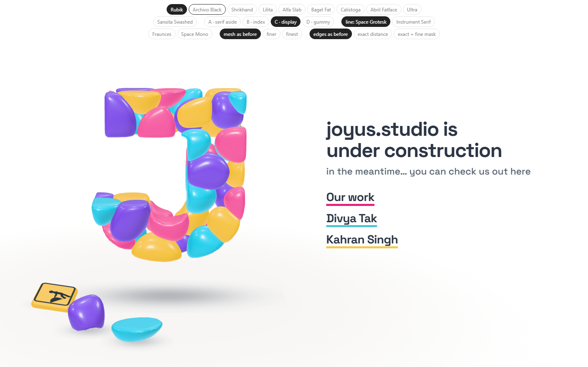
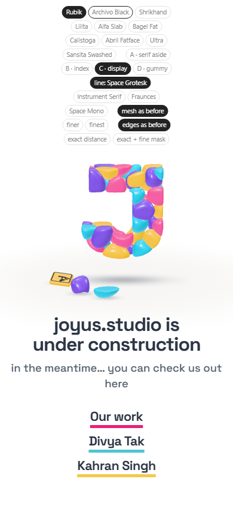
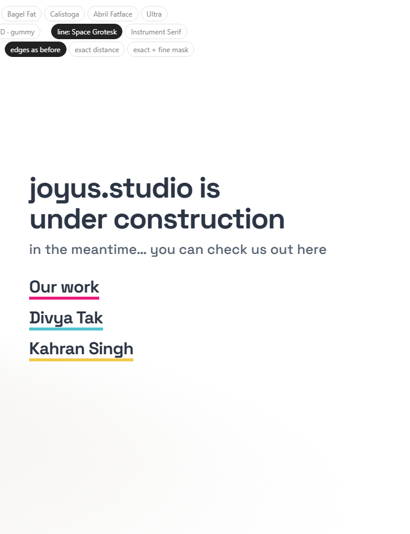
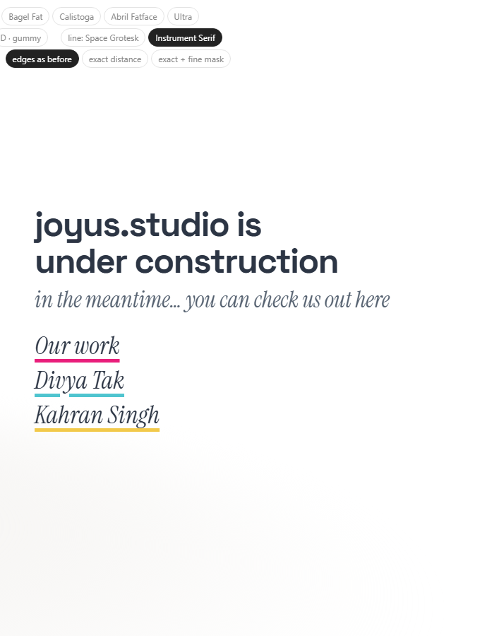
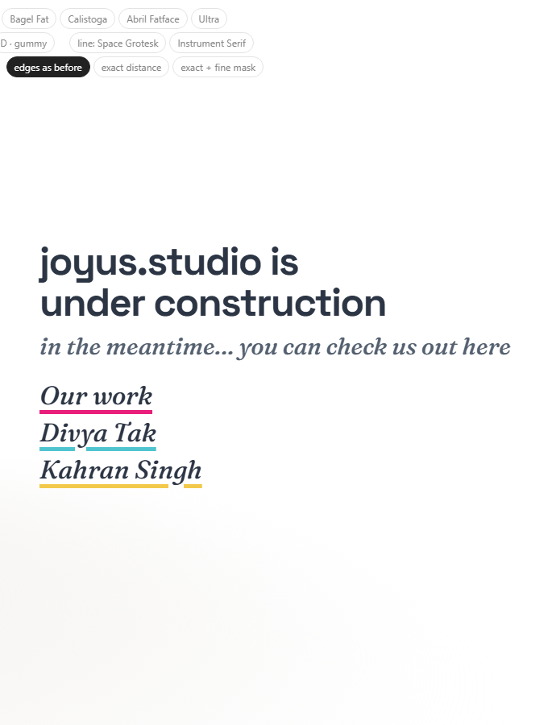
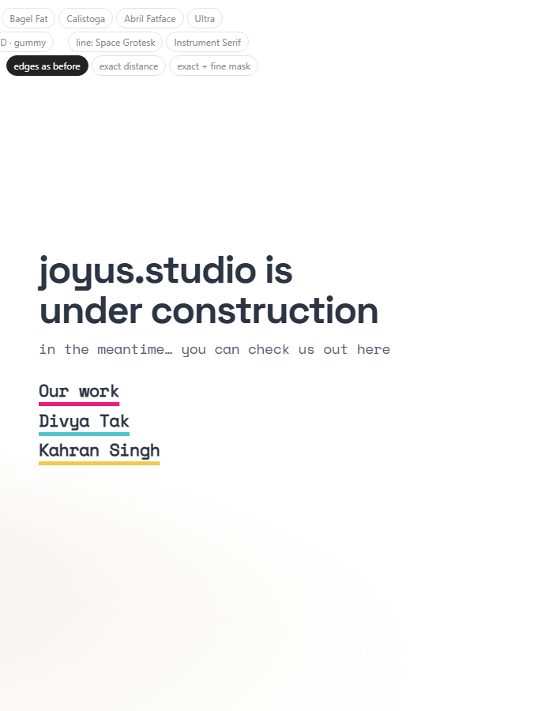

Study 35 · 13 October 2026
The words, after the sketch
Your marks on Study 32: the headline runs wider and "under construction" stays on one line; the links stack as a list under the line; one font switch dresses the line and the links together.
Open the page (line fonts at the top)

Line and links, four fonts




Open
- The font pair.
- The sign and the fallen stones to the bottom right, under the words: Study 36.
Test: page-test.mjs, 51 checks in a browser; read by check.cjs.